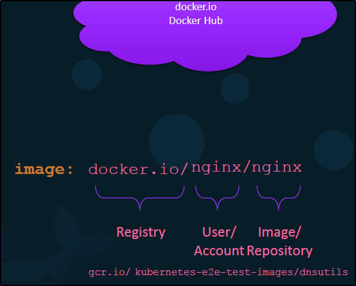

Il Docker Registry è il repository dove sono le Docker Images.
Quando dai il nome di un immagine, si suppone che l'user/account abbia lo stesso nome se non specificato!

Credenziali di login: interessante dove trovarle!

Come Deploy il tuo Private Registry sulla tua Organization?